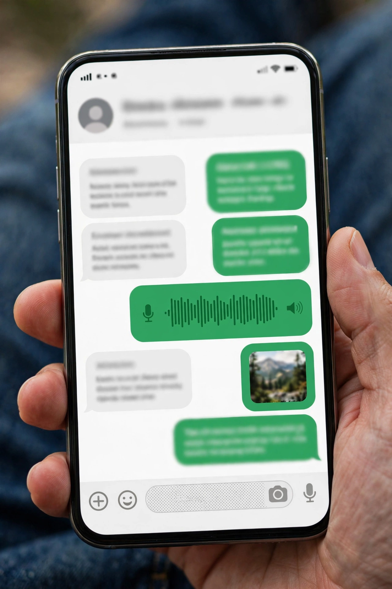

Simple, reliable, private messaging and calling for free*, available all over the world.
Download
*Data charges may apply. Web version: WhatsApp Web · Part of Meta

Phone showing a chat with green and white message bubbles